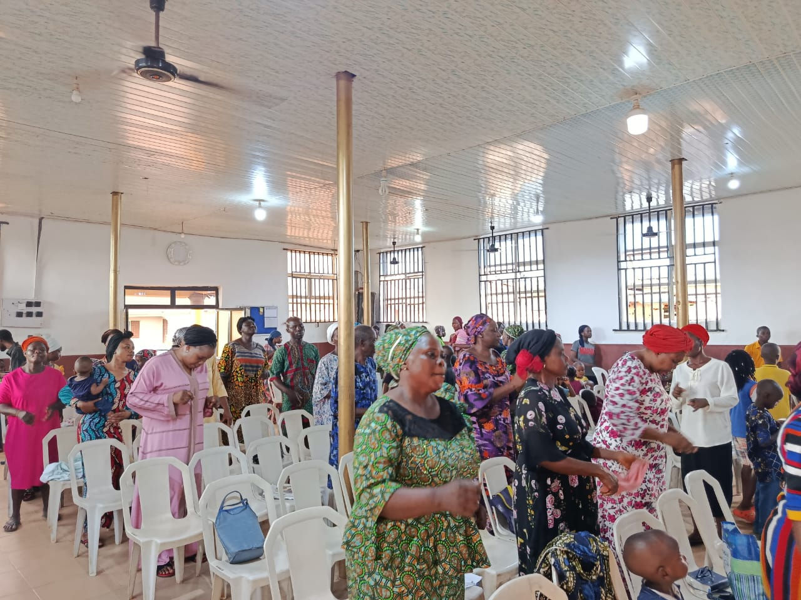
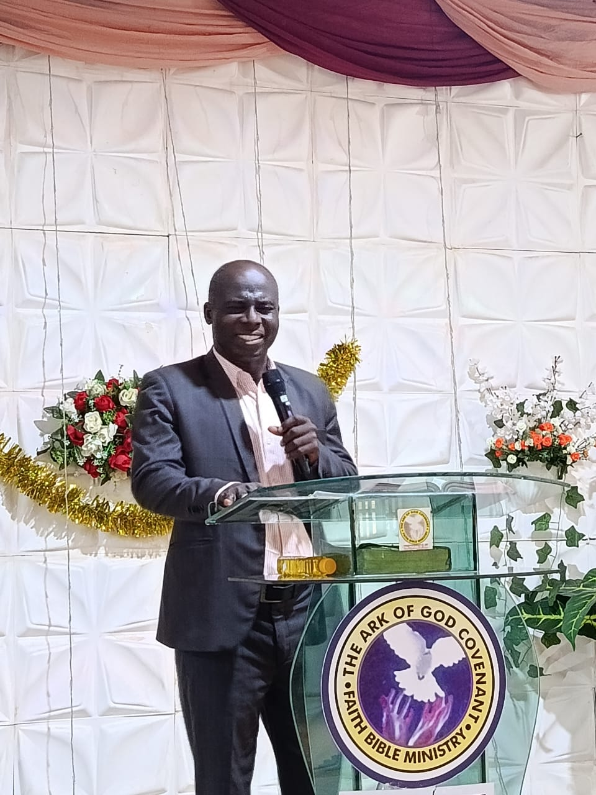
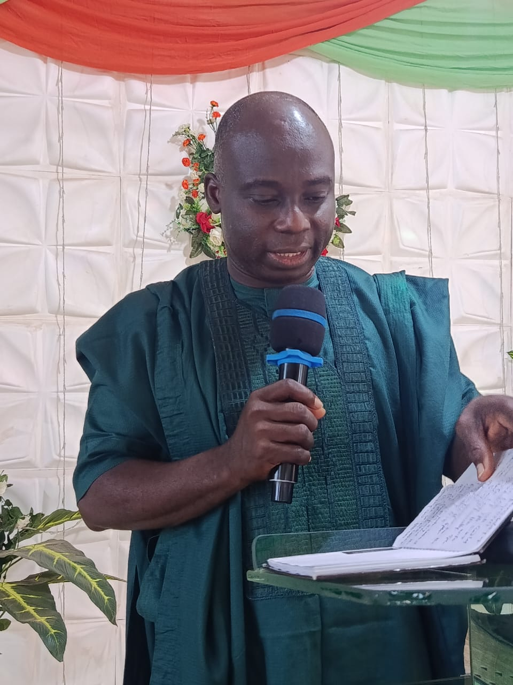

Preparing Souls for the Second Coming of Christ
To prepare people for the second coming of our Lord Jesus Christ.
To guide souls back to God and preach truth worldwide.







Phone: 07031183005
Email: thearkofgodcfbm@gmail.com
Headquarters:
No. Olowa street, Bolounduro, Gbagede, Amoyo, Kwara State
Branch:
Akani Bode Olude, Ifelodu Street, Abeokuta, Ogun State

Pastor Dr. E.A Abioye is a dynamic servant of God, a prophetic voice, and a vessel of honor in the hands of the Almighty.
With a burning passion for revival and kingdom advancement, he has been commissioned to raise men of faith, power, and purpose. His teachings are filled with revelation, authority, and life-transforming grace.
Through his ministry, countless lives have been impacted, destinies restored, and souls drawn into the kingdom of God.
He is a man of prayer, a teacher of truth, and a carrier of divine fire.
Scripture: Acts 1:8
Beloved, you are not ordinary. You are a carrier of divine power. The Spirit of God in you empowers you to overcome every challenge, break every limitation, and walk in victory daily.
Today, step out in boldness. Speak with authority. Live with confidence. Heaven backs you!
Today’s Reading:
Stay consistent and grow spiritually every day.
Pastor Dr. E.A Abioye is a dynamic servant of God, a prophetic voice, and a vessel of honor in the hands of the Almighty.
With a burning passion for revival and kingdom advancement, he has been commissioned to raise men of faith, power, and purpose. His teachings are filled with revelation, authority, and life-transforming grace.
Through his ministry, countless lives have been impacted, destinies restored, and souls drawn into the kingdom of God.
He is a man of prayer, a teacher of truth, and a carrier of divine fire.